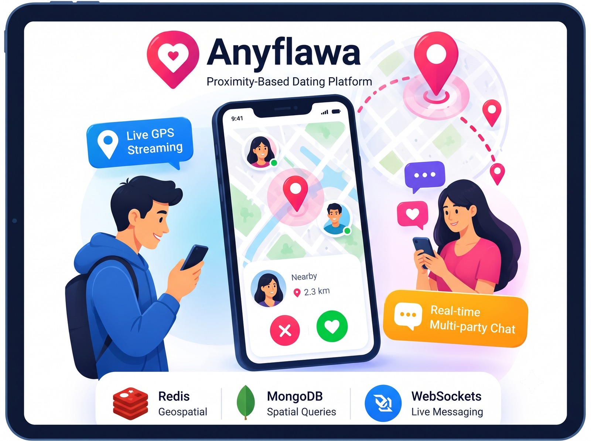

1. Executive Summary & Engineering Strategy
In location-aware mobile applications, calculating geometric distances between thousands of moving users in a relational database or flat document store produces heavy CPU loads. Running trigonometry (Haversine formula) across millions of coordinates will quickly exhaust server memory.
I architected a two-tier spatial query pipeline:
- Tier 1: Redis Geospatial Index (In-Memory): Coordinates are stored in Redis using
GEOADD. Nearby candidate user IDs within a specified radius (e.g., 5km) are retrieved in microseconds usingGEORADIUSBYMEMBERorGEOSEARCH. - Tier 2: MongoDB 2dsphere Query: The candidate IDs are piped to MongoDB to apply rich demographic filters (age, interests, preferences) in a single indexed batch lookup.
2. Real-Time WebSocket Chat Infrastructure
Matched users communicate via an event-driven WebSocket pipeline featuring:
- Ephemeral Presence & Typing Indicators: Tracked via Redis key TTLs without unnecessary database writes.
- Offline Message Queuing: Messages for disconnected users are persisted in MongoDB and pushed as Apple APNs / Firebase FCM push notifications.
- Media Storage: Secure direct S3 pre-signed upload URLs for photo and voice notes.
Building Location-Aware or Social Systems?
Whether you need geospatial indexing, sub-second matchmaking, or scalable real-time chat architectures, let's connect.
Contact Chetan Ladumor